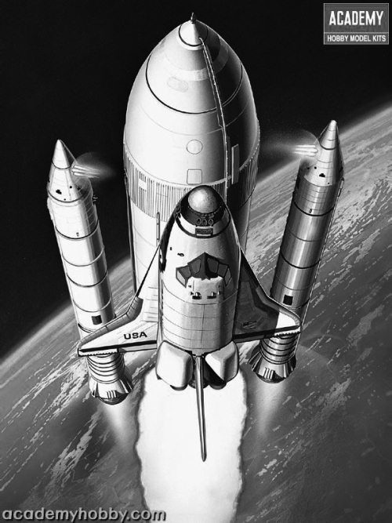

«Спейс Шаттл» – детище холодной войны
Систему многоразового использования «Спейс Шаттл» можно по праву назвать детищем холодной войны. Не только потому, что ее создание велось в годы «великого противостояния» сверхдержав, но и потому, что идеологи ее разработки предполагали активное использование челноков в военных целях. Хотя практика показала, что в качестве системы вооружения шаттлы малопригодны. И, тем не менее, существовала обширная программа Пентагона, направленная на то, чтобы с помощью кораблей многоразового использования решать боевые задачи. Немалое значение челнокам отводилось и в программе СОИ, которой была посвящена одна из предыдущих глав.
Официальной датой начала работ по созданию кораблей многоразового использования считается 5 января 1972 года. В этот день президент США Ричард Никсон утвердил программу «Спейс Шаттл» аэрокосмического ведомства, согласованную с Министерством обороны. Однако фактически поиск технического облика и целесообразности создания такого рода ракетно-космической системы начался в НАСА еще в сентябре 1969 года, то есть всего через два месяца после первой высадки человека на поверхности Луны. Тогда по поручению президента США была сформирована рабочая группа из числа ведущих специалистов, которым предстояло изучить перспективы развития американской программы по использованию космического пространства. Основной упор при этом должен был делаться на обеспечение национальной безопасности Соединенных Штатов. Иначе говоря, речь шла о разработке концепции использования космического околоземного пространства для размещения военных систем.
Как показал сделанный специалистами анализ, чтобы решить эту задачу недостаточно было технических средств, существовавших в то время в США. В первую очередь требовалась разработка новых способов выведения грузов в космос. Ракета-носитель «Сатурн-5», позволившая американцам выиграть «лунную гонку», не могла удовлетворить нужды военных, так как фактически полностью исчерпала себя. А если быть точнее, на нее никогда не делалась ставка при разработке военных космических программ – этот мощный носитель создавали как средство доставки человека на Луну. Хотя некоторые варианты боевого применения «Сатурна-5» и существовали, но нельзя сказать, что этот аспект был для американцев первостепенным. От «лунного носителя» отказались практически сразу, превратив его в будущий экспонат аэрокосмических музеев. В конце 1960-х это произошло только на бумаге, но уже через несколько лет выводы аналитиков стали реальностью.
Идея «найти эффективные средства превратить ядерное оружие в ненужный и устаревший вид вооружений» была не единственным аргументом в пользу развертывания широкомасштабной программы милитаризации космоса. В недрах американской администрации зрели планы очередного витка гонки вооружений, для которого требовались, прежде всего, новые транспортные средства. Таким средством должна была стать многоразовая система, призванная заменить все одноразовые носители.
Уже в начале 1970 года в НАСА приступили к интенсивным проектным работам по созданию новых ракетно-космических систем. Были рассмотрены возможности применения полностью многоразовых пилотируемых транспортных систем, а также орбитальных кораблей с одноразовыми подвесными твердотопливными и жидкостными ускорителями. Каждый из предлагавшихся вариантов был подвергнут тщательной оценке с точки зрения риска разработки и затрат. В конце концов, было принято решение строить ракету и корабль в том виде, в каком его используют и сегодня. Правда, окончание «эры шаттлов» уже не за горами. Быть может, читатели смогут ознакомиться с этой книгой как раз в те дни, когда будет происходить завершающий полет челнока.
Космическая система «Спейс Шаттл» выполнена по двухступенчатой схеме с параллельным расположением ступеней: первая – твердотопливные ускорители, вторая – корабль с подвесным топливным баком. Правильнее было бы назвать ее полутораступенчатой, так как челнок одновременно является и второй ступенью носителя, и полезным грузом, выводимым на орбиту. Но это уже детали.
При старте включаются двигатели обеих ступеней. На высоте около 40 километров твердотопливные ускорители отделяются от топливного бака и на парашютах опускаются на поверхность Атлантического океана. Затем их вылавливают и на специализированных судах доставляют на ремонтно-восстановительную базу, где происходит их подготовка к повторному применению. Эти ускорители могут использоваться до 20 раз.
Как я уже сказал, второй ступенью является сам корабль с внешним топливным баком. Маршевые двигатели шаттла используют топливо – жидкий кислород и водород – из топливного бака, который сбрасывается по завершению полетной программы.
Довыведение осуществляется двумя двигателями маневрирования корабля, которые обеспечивают также коррекцию орбиты, сближение с другими космическими аппаратами и торможение при сходе с орбиты. При возвращении на Землю корабль совершает планирующий спуск с самолетной посадкой на специально приспособленную для этого полосу.
Стартовая масса ракетно-космической системы составляет более 2000 тонн, в том числе более 100 тонн приходится на сам челнок. Максимальный полезный груз, который может быть выведен на орбиту высотой 185 километров, составляет 29,5 тонны. А с орбиты на Землю шаттл может возвратить космические аппараты массой до 14,5 тонны. Поверхность орбитального корабля покрыта тепловой защитой, выдерживающей температуру до 1260 градусов в течение ста полетов с незначительным ремонтом. Но все эти цифры расчетные. На практике редкий шаттл смог выдержать такие нагрузки столь длительное время.
Экипаж корабля включает в себя командира, пилота и до пяти пассажиров, которые проводят работы с полезной нагрузкой или научные эксперименты. Итого семь человек. Правда, это не все возможности шаттлов. Пару раз на борту челнока находилось по восемь человек. Условия пребывания астронавтов на борту кораблей многоразового использования весьма комфортны и существенно отличаются от того, что предоставляют российские «Союзы».
Продолжительность одиночного полета шаттлов, при их соответствующем оснащении, может составлять до 30 суток. Хотя на практике больше чем на 17 суток эти корабли на орбиту не отправлялись.
На разработку системы «Спейс Шаттл» и наземных средств обеспечения ее эксплуатации, проведение всевозможных испытаний и подготовку экипажей ушло девять лет. Хотя первоначально американцы рассчитывали сделать это несколько быстрее. Обошлось все это, ни много, ни мало, в 16,6 миллиарда долларов в ценах 1979 года. Если пересчитать в сопоставимых ценах на сегодняшний день, эта цифра возрастет как минимум в два раза.
Эксплуатация ракетно-космической системы «Спейс Шаттл» была начата в 1981 году полетом «Колумбии» с астронавтами Джоном Янгом (John Young) и Робертом Криппеном (Robert Crippen) на борту. Их миссия продолжалась 54 с половиной часа и завершилась успешным приземлением на базе ВВС США Эдвардс в штате Калифорния.
Вообще-то первый полет планировалось совершить на два года раньше. Но слишком велик был риск срыва всей программы работ, поэтому специалисты НАСА много раз переносили дату первого старта, подстраховывая себя на случай возможной неудачи.
В конце концов шаттл взлетел. В качестве даты для первого старта американцы выбрали 12 апреля – день, когда в 1961 году в космос отправился первый в мире космонавт Юрий Алексеевич Гагарин.

Система многоразового использования «Спейс Шаттл»
Сделано это было совсем не случайно. Тем самым американцы подсластили горькую пилюлю для себя и подпортили настроение нам. Если читатели имеют возможность познакомиться с публикациями американской прессы последних лет, особенно апреля 2001 года, то несложно заметить, что большинство изданий США события 1961 и 1981 годов делают сопоставимыми по своей значимости. Причем сначала довольно много пишут о полете «Колумбии», ну а потом уж мимоходом вспоминают полет Гагарина. А спустя годы, учитывая возможности и нахрапистость американской прессы, о наших достижениях совсем могут позабыть.
В 1981–1982 годах состоялось еще три испытательных полета шаттлов. Лишь пятая экспедиция на орбиту в ноябре 1982 года была признана эксплуатационной, и челнок вступил в строй. С его помощью на околоземную орбиту и на траекторию полета к другим планетам были выведены десятки космических аппаратов. Проведены тысячи всевозможных научных экспериментов.
Во время первых полетов шаттлов был проведен ряд интересных операций, не имевших на тот момент аналогов в мировой космонавтике. Так, в ходе миссии STS^: ^ (14-й полет кораблей многоразового использования) в ноябре 1984 года были сняты с орбиты и возвращены на Землю для ремонта два телекоммуникационных спутника (индонезийский «Палапа В2» и американский «Уэстар-6»), которые оказались на нерасчетных орбитах во время одного из предыдущих полетов. Через несколько лет их вновь отправили в космос. Правда, уже с помощью одноразовых носителей.
В ходе миссий STS-41C (апрель 1984 года) и STS-51I (август-сентябрь 1985 года) экипажи шаттлов провели ремонт космических аппаратов прямо в космосе. Им удалось реанимировать научно-исследовательский спутник SMM и военный спутник связи «Лисат-3».
Но своей основной задачи – заменить прочие одноразовые ракеты-носители, шаттл так и не выполнил. А какие надежды в свое время возлагали на корабли многоразового использования! Какие грандиозные планы рождались в умах инженеров НАСА!
Система «Спейс Шаттл» задумывалась как всеобъемлющая замена всего и вся, что было сделано в американской космонавтике к 1970-м годам. На ее основе в будущем предполагалось создавать корабли, которые должны были отправиться к другим планетам.
Сколь непродуманны были эти планы, сегодня хорошо известно. Ну а тогда рассуждали иначе и иначе строили стратегию освоения космического пространства.
По расчетам американских специалистов, для удовлетворения всех насущных потребностей космической программы, как существовавших в то время, так и перспективных, требовалось иметь флот из четырех челноков. При этом они должны были летать 55–60 раз в год. По сути дела каждый новый полет должен был начинаться тогда, когда предыдущий челнок (или два) еще не возвратился с орбиты.
По численности кораблей многоразового использования американцы свои задачи выполнили. Более десяти лет в их арсенале было четыре корабля: «Колумбия», «Атлантис», «Дискавери» и «Индевер».
Сейчас осталось три – разбилась «Колумбия». Был построен еще один шаттл – «Челленджер», но он взорвался тогда, когда строительство «Дискавери» и «Атлантиса» еще только велось. Поэтому американское правительство выделило средства на строительство «Индевера» и вопрос с требуемой численностью был решен.
Пуски предполагалось осуществлять с мыса Канаверал во Флориде, что обеспечивало выведение грузов на околоземную орбиту с наклонением от 28,5 до 57 градусов, и с базы ВВС США Ванденберг в Калифорнии, что позволяло выводить спутники и корабли на орбиты с наклонением от 56 до 106 градусов. Причем все полеты по военным программам планировалось производить с Западного побережья США.
К моменту написания книги в США состоялись 132 полета кораблей многоразового использования. Два из них – в январе 1986 года и в феврале 2003 года – закончились катастрофами и гибелью кораблей и их экипажей. Этим трагедиям будут посвящены отдельные главы книги.
Сейчас в графике значатся три полета, после чего шаттлы будут отправлены на свалку истории. Им на смену придут другие корабли. Только вот пока непонятно, какие и на решение каких задач они будут ориентированы. Это станет ясно через несколько лет.
А сейчас рассказ о первом из двух погибших челноков.